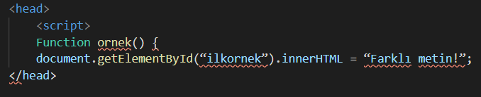
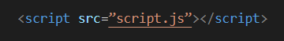

UZAKTAN EĞİTİM 1. HAFTA
JavaScript kodları HTML belgesi içerisinde head ya da body elementleri arasında kullanılır.
Aşağıda head elementi arasında javaScript kodları kullanılmıştır.
JavaScript kodlarının bir diğer kullanım şekli ise direk olarak JavaScript dosyasını HTML belgesi üzerinden çağırarak kullanmaktır. Bu tür kullanımda dosyanız kod kalabalığından kurtulur. Aşağıdaki örneği inceleyebilirsiniz.
JavaScript kod yapısı hakkında bilmeniz gereken önemli diğer hususlar ise:
- JavaScript kodlarını kullanabilmek için HTML dili bilmeniz gerekmektedir.
- BODY içerisinde kullanılan JavaScript kodları sayfa yükleme hızını artıracaktır.
- Dışarıdan çağırılan JavaScript dosyası içerisinde 'script' elementi kullanılmaz.